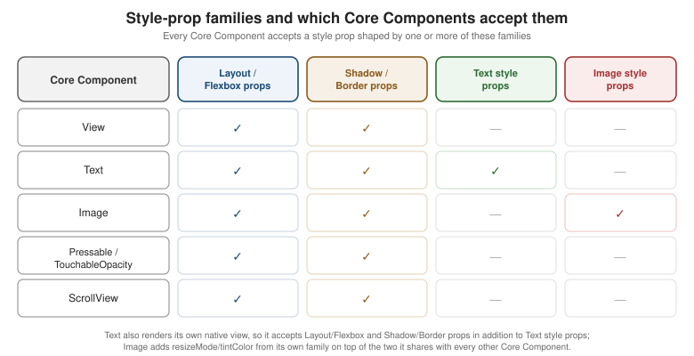

Styling
|
This content was generated with the assistance of AI and should be verified against the official documentation before being relied on in production. |
Core Components and React Fundamentals
introduced the style prop and a first, unthemed StyleSheet.create call on Places's PlaceCard. This page
covers styling in full: how style actually works under the hood, the units and APIs behind it, colors and dark
mode, custom fonts, and how to keep a growing app’s styles maintainable — ending with Places's own design
tokens and a ThemeProvider/useTheme() Hook that every later UI page in this section reuses rather than
redefines. Flexbox Layout (next in this section) covers the box model
and layout algorithm those style objects actually describe; this page is about how styles are written, chosen,
and organized, not what each Flexbox property does.
Inline Styles, StyleSheet.create, and Style Composition
A React Native style prop is never CSS — there is no cascade, no selector, and no stylesheet file loaded by
the platform. It is a plain JavaScript object (or an array of them) of camelCased properties, most of them a
short hop from their CSS namesake (backgroundColor, flexDirection, borderRadius):
<View style={{ padding: 12, backgroundColor: '#fff' }}>
<Text style={{ fontSize: 16, fontWeight: '600' }}>Places</Text>
</View>An inline object like that one is created fresh on every render, which is fine for a one-off, purely dynamic
value but wasteful and harder to scan once a component has more than a couple of style properties. StyleSheet.create
solves both problems at once:
const styles = StyleSheet.create({
card: { flexDirection: 'row', alignItems: 'center', padding: 12 },
name: { fontSize: 16, fontWeight: '600' },
});
<View style={styles.card}>
<Text style={styles.name}>{place.name}</Text>
</View>StyleSheet.create does not compile to CSS or move anything off the JS thread by itself; what it actually buys
is:
-
Validation at creation time. Passing a typo’d or platform-inapplicable property throws immediately when the module loads, rather than silently doing nothing at render time the way an inline object’s mistake would.
-
Reuse. The same style object reference is reused across every render and every instance of the component instead of being reallocated each time, which matters once a screen renders hundreds of rows through
FlatList. -
A single, colocated place for a component’s styles, read top-to-bottom the way a small stylesheet would be, instead of scattered across inline
style={{ … }}props through the JSX.
A handful of StyleSheet static helpers round out the API:
-
StyleSheet.flatten(style)— collapses a style value that might be an object,null, or an array of either (exactly what astyleprop is allowed to be) into one plain object; useful when a component needs to read back an effective property value (e.g. to decide something at render time) rather than just pass the style along. -
StyleSheet.absoluteFill— a ready-made{ position: 'absolute', left: 0, right: 0, top: 0, bottom: 0 }object, for a full-bleed overlay (a loading spinner’s dimmed backdrop, a photo’s gradient overlay) without retyping the four properties each time. -
StyleSheet.hairlineWidth— the thinnest line the current device’s screen density can render (often less than a single density-independent point), used for a border that should read as "one pixel" on every screen rather than a fixed1that looks thick on a high-density display.
Style Arrays and Conditional Styles
style accepts an array, and later entries win over earlier ones for any property both define — this is how a
base style is combined with an override, or a conditional style is layered on without an if/else branch in
the JSX:
<View style={[styles.card, isSelected && styles.cardSelected]}>
<Text style={[styles.favourite, place.favourite && styles.favouriteActive]}>
{place.favourite ? '★' : '☆'}
</Text>
</View>isSelected && styles.cardSelected evaluates to false (which style simply ignores) when isSelected is
falsy, and to the style object when it is truthy — the same short-circuit pattern
JSX and Rendering already covers for conditional elements, applied here
to conditional styles. typescript.adoc’s `StyleProp<ViewStyle> type (rather than ViewStyle alone) is what
makes a component’s own style prop accept exactly these array-and-falsy-value shapes, not just a single style
object.
The Style-Prop Families
Not every Core Component accepts the same style properties, because not every Core Component renders the same kind of Native Component underneath. Four overlapping families cover essentially everything:
-
Layout / Flexbox props (
flex,flexDirection,alignItems,justifyContent,padding,margin,width,height,position, …) — accepted by every Core Component’sstyle, because every one of them participates in its parent’s Flexbox layout regardless of what it renders. -
Shadow / Border props (
borderWidth,borderColor,borderRadius,backgroundColor,shadowColor/shadowOffset/shadowOpacity/shadowRadiuson iOS,elevationon Android) — also accepted broadly, since a border or background can decorate almost any rendered box. -
Text style props (
fontSize,fontWeight,fontFamily,lineHeight,letterSpacing,textAlign,color) — meaningful only onText, becauseTextis the only place text may appear at all. -
Image style props (
resizeMode,tintColor,overlayColor) — meaningful only onImage, describing how its bitmap fills the box the Layout/Flexbox props already gave it.

Units: Density-Independent Points, PixelRatio, and Window Dimensions
Every numeric style value (width: 56, fontSize: 16) is in density-independent points, never raw device
pixels — the same abstraction Android’s dp and iOS’s points already provide natively, so a 56-wide
PlaceCard photo occupies the same physical size on a low-density and a high-density screen even though the
number of actual pixels backing it differs. PixelRatio is the escape hatch for the rare case that needs to
reason about that underlying pixel grid directly:
import { PixelRatio } from 'react-native';
PixelRatio.get(); // the device's pixel density, e.g. 3 for a 3x screen
PixelRatio.getPixelSizeForLayoutSize(56); // 56 points converted to raw pixels at this density
PixelRatio.roundToNearestPixel(56.3); // snaps a point value to one the device can render without blurDimensions.get('window') reads the current window’s width and height once, synchronously, outside of a
component’s render — fine for a one-off calculation, but it does not re-render anything when the window
changes, and a rotation, a split-screen resize, or (on tablets and foldables) a multi-window layout change all
change it. The useWindowDimensions() Hook is the preferred replacement inside a component for exactly that
reason — it subscribes to those changes and re-renders the component automatically:
import { useWindowDimensions } from 'react-native';
function PlacesListScreen() {
const { width } = useWindowDimensions();
const numColumns = width >= 600 ? 2 : 1; // re-computed on every rotation/split-screen change
return <FlatList data={places} numColumns={numColumns} renderItem={renderPlaceCard} keyExtractor={(p) => p.id} />;
}Dimensions.get('window') remains correct for a value read once at module scope before any component mounts
(a constant grid size decided before the app even renders); anywhere a layout decision needs to stay correct
across the lifetime of a mounted screen, useWindowDimensions() is the only one of the two that keeps it that
way.
Colors, Dark Mode, and Native System Colors
Beyond an ordinary '#1c4b73' or 'rgb(28, 75, 115)' string, React Native exposes two escape hatches into each
platform’s own native color system rather than a value hand-picked in JavaScript:
-
PlatformColor(Android and, since recent versions, also usable on iOS for platform colors) resolves to an Android system color by name at render time —PlatformColor('?attr/colorPrimary')or a named resource such asPlatformColor('@android:color/holo_blue_bright')— so a component picks up the device’s own Material You/theme accent color instead of a fixed hex value baked into the app. -
DynamicColorIOSsupplies iOS’s own semantic colors, which already adapt to light mode, dark mode, and increased-contrast accessibility settings on their own:import { DynamicColorIOS, PlatformColor, Platform } from 'react-native'; const labelColor = Platform.select({ ios: DynamicColorIOS({ light: 'black', dark: 'white' }), android: PlatformColor('?attr/textColorPrimary'), default: '#1a1a1a', });
Places uses neither directly — its own palette (below) is deliberately app-branded rather than tied to either platform’s system colors — but both remain the right choice for a control that should look and feel like it belongs to the OS rather than to the app’s own design system (a native-feeling settings screen, for example).
Dark Mode: useColorScheme and Appearance
The useColorScheme() Hook returns 'light', 'dark', or null (before the app has determined the device’s
setting) and, like useWindowDimensions(), re-renders the component whenever the OS-level setting changes — including live, without restarting the app, when the user flips it from Control Center/Quick Settings while
Places is in the foreground. The underlying Appearance API (Appearance.getColorScheme(),
Appearance.addChangeListener(callback)) is what useColorScheme() itself is built on, and remains useful
outside of a component — e.g. inside a non-React module that needs to react to an appearance change without a
Hook.
Places wires useColorScheme() through a single Context provider rather than calling it from every component
that needs a color — established in full below and reused, never redefined, by every later page in this
section.
Custom Fonts with expo-font
Places's typography (below) names its own font family rather than falling back to each platform’s system
font, loaded once at app startup with expo-font’s `useFonts Hook:
// app/App.tsx (excerpt)
import { useCallback } from 'react';
import { useFonts, Inter_400Regular, Inter_500Medium, Inter_700Bold } from '@expo-google-fonts/inter';
import * as SplashScreen from 'expo-splash-screen';
import { View } from 'react-native';
SplashScreen.preventAutoHideAsync();
export default function App() {
const [fontsLoaded] = useFonts({ Inter_400Regular, Inter_500Medium, Inter_700Bold });
const onLayoutRootView = useCallback(async () => {
if (fontsLoaded) {
await SplashScreen.hideAsync();
}
}, [fontsLoaded]);
if (!fontsLoaded) {
return null; // splash screen stays up until the fonts above are ready
}
return <View onLayout={onLayoutRootView}>{/* RootNavigator, once Navigation replaces this placeholder */}</View>;
}SplashScreen.preventAutoHideAsync() called at module scope keeps the native splash screen on top of a blank
white frame while useFonts loads; onLayoutRootView hides it only once fontsLoaded is true, so the app
never flashes its fallback system font before swapping to the real one. A variable font (one file covering
every weight, e.g. Inter-Variable.ttf loaded via Font.loadAsync) is the more compact alternative to the
per-weight static files shown above when a project needs many weights of the same family; either way, the
loaded family name ('Inter_400Regular', or the variable font’s own registered name) is exactly the string
theme.typography.fontFamily.* (below) refers to.
Making Styling Maintainable
A handful of StyleSheet.create calls scattered across components works for a small app, but it stops scaling
the moment two screens need to agree on the same shade of muted gray, the same spacing rhythm, or the same
type scale — and it breaks outright the moment dark mode needs every one of those values to change together.
Three ideas keep styling maintainable as Places grows:
-
Design tokens — named, reusable values (
colors.textMuted,spacing.md,typography.size.lg) instead of a literal'#666'or12repeated in every file that needs it. A token changes in exactly one place and every consumer picks up the new value automatically. -
A theme object — the tokens grouped into one shape (
{ colors, spacing, typography }) and handed to every component through a single Hook, rather than importingcolors.tsin one file andspacing.tsin another. -
Variants — a component prop (conventionally named
variant) that switches between a small, closed set of token-driven style sets, instead of exposing an open-endedstyleoverride for every visual difference a component might need:interface BadgeProps { label: string; variant?: 'default' | 'favourite'; } function Badge({ label, variant = 'default' }: BadgeProps) { const theme = useTheme(); const backgroundColor = variant === 'favourite' ? theme.colors.favourite : theme.colors.surface; return ( <View style={[styles.badge, { backgroundColor }]}> <Text style={{ color: theme.colors.text }}>{label}</Text> </View> ); }
The Styling-Solution Landscape
StyleSheet.create is React Native’s own built-in styling model and is all Places needs for this section, but
it is one point on a wider landscape worth knowing before picking a default for a new project:
| Solution | What it is | Choose it when |
|---|---|---|
StyleSheet (built-in) |
React Native’s own API, covered above — zero dependencies, plain JS objects, no runtime style engine beyond what React Native already ships. |
The default choice for most apps, and the only one used throughout the rest of this section: no extra dependency, no build-time step, and every other page’s snippets stay readable without a second styling API to learn alongside React Native itself. |
CSS-in-JS: tagged template literals define a component’s styles, with a |
A team already fluent in styled-components on the web wants the same authoring model on mobile; the trade-off
is a real runtime cost (styles are computed and injected at render time, not compiled away) that
|
|
Tailwind’s utility-class syntax ( |
A team already fluent in Tailwind on the web wants the same utility-class vocabulary on mobile, with React Native’s own performance characteristics preserved underneath. |
|
A compiled, cross-platform (React Native and React DOM, from one codebase) styling and component system with an optimizing compiler that flattens style logic at build time. |
An app that also ships a web build from the same component tree, and can afford Tamagui’s steeper learning curve (its own theming/token/compiler concepts) in exchange for that cross-platform reach and compiled performance. |
|
A |
A team wants `StyleSheet.create’s familiar shape plus first-class theme/breakpoint support out of the box, without adopting a CSS-in-JS runtime or a Tailwind-style utility syntax. |
Places: A Themed PlaceCard, Three Ways
Places's own theme lives in src/theme/ — three token modules plus the ThemeProvider/useTheme() Hook
every later page in this section imports rather than redefines:
// src/theme/colors.ts
export interface ColorPalette {
background: string;
surface: string;
text: string;
textMuted: string;
primary: string;
border: string;
favourite: string;
}
export const lightColors: ColorPalette = {
background: '#ffffff',
surface: '#f7f7f7',
text: '#1a1a1a',
textMuted: '#666666',
primary: '#2d6a34',
border: '#e0e0e0',
favourite: '#e0a800',
};
export const darkColors: ColorPalette = {
background: '#121212',
surface: '#1e1e1e',
text: '#f2f2f2',
textMuted: '#a0a0a0',
primary: '#5fb86a',
border: '#2c2c2c',
favourite: '#f0c040',
};// src/theme/spacing.ts
export const spacing = {
xs: 4,
sm: 8,
md: 12,
lg: 16,
xl: 24,
xxl: 32,
} as const;// src/theme/typography.ts
export const typography = {
fontFamily: {
regular: 'Inter_400Regular',
medium: 'Inter_500Medium',
bold: 'Inter_700Bold',
},
size: { sm: 13, base: 15, lg: 16, xl: 20, xxl: 28 },
weight: { regular: '400', medium: '500', bold: '700' },
} as const;// src/theme/ThemeProvider.tsx
import { createContext, useContext, useMemo } from 'react';
import type { ReactNode } from 'react';
import { useColorScheme } from 'react-native';
import { darkColors, lightColors } from './colors';
import type { ColorPalette } from './colors';
import { spacing } from './spacing';
import { typography } from './typography';
export interface Theme {
colors: ColorPalette;
spacing: typeof spacing;
typography: typeof typography;
dark: boolean;
}
const ThemeContext = createContext<Theme | null>(null);
export function ThemeProvider({ children }: { children: ReactNode }) {
const scheme = useColorScheme(); // 'light' | 'dark' | null
const theme = useMemo<Theme>(() => {
const dark = scheme === 'dark';
return { colors: dark ? darkColors : lightColors, spacing, typography, dark };
}, [scheme]);
return <ThemeContext.Provider value={theme}>{children}</ThemeContext.Provider>;
}
export function useTheme(): Theme {
const theme = useContext(ThemeContext);
if (theme === null) {
throw new Error('useTheme must be used within a ThemeProvider');
}
return theme;
}ThemeProvider wraps RootNavigator at the top of App.tsx, alongside the font-loading gate shown above, so
useTheme() is available to every screen and component from the very first render onward.
With the theme in place, here is PlaceCard
restyled three ways, all producing the same visual result, for direct comparison:
(a) StyleSheet.create + useTheme()
// src/features/places/components/PlaceCard.tsx
import { useMemo } from 'react';
import { Image, Pressable, StyleSheet, Text, View } from 'react-native';
import type { Place } from '../types';
import { useTheme } from '../../../theme/ThemeProvider';
import type { Theme } from '../../../theme/ThemeProvider';
interface PlaceCardProps {
place: Place;
onPress: (placeId: string) => void;
onToggleFavourite: (placeId: string) => void;
}
export function PlaceCard({ place, onPress, onToggleFavourite }: PlaceCardProps) {
const theme = useTheme();
const styles = useMemo(() => createStyles(theme), [theme]);
return (
<Pressable style={styles.card} onPress={() => onPress(place.id)}>
{place.photoUri !== null && (
<Image source={{ uri: place.photoUri }} style={styles.photo} resizeMode="cover" />
)}
<View style={styles.body}>
<Text style={styles.name}>{place.name}</Text>
<Text style={styles.category}>{place.category}</Text>
</View>
<Pressable onPress={() => onToggleFavourite(place.id)} hitSlop={8}>
<Text style={[styles.favourite, place.favourite && styles.favouriteActive]}>
{place.favourite ? '★' : '☆'}
</Text>
</Pressable>
</Pressable>
);
}
function createStyles(theme: Theme) {
return StyleSheet.create({
card: {
flexDirection: 'row',
alignItems: 'center',
padding: theme.spacing.md,
borderRadius: 10,
backgroundColor: theme.colors.surface,
borderWidth: StyleSheet.hairlineWidth,
borderColor: theme.colors.border,
},
photo: { width: 56, height: 56, borderRadius: 8, marginRight: theme.spacing.md },
body: { flex: 1 },
name: { fontSize: theme.typography.size.lg, fontWeight: theme.typography.weight.bold, color: theme.colors.text },
category: { fontSize: theme.typography.size.sm, color: theme.colors.textMuted },
favourite: { fontSize: theme.typography.size.xl, marginLeft: theme.spacing.sm, color: theme.colors.textMuted },
favouriteActive: { color: theme.colors.favourite },
});
}This is the version reused, unmodified, by every later page in this section that renders a PlaceCard.
(b) Styled Components
// The same PlaceCard, restyled with styled-components/native -- shown for comparison only, not reused elsewhere.
import styled from 'styled-components/native';
import { Image, Pressable, StyleSheet, Text } from 'react-native';
import type { Place } from '../types';
const Card = styled(Pressable)`
flex-direction: row;
align-items: center;
padding: ${({ theme }) => theme.spacing.md}px;
border-radius: 10px;
background-color: ${({ theme }) => theme.colors.surface};
border-width: ${StyleSheet.hairlineWidth}px;
border-color: ${({ theme }) => theme.colors.border};
`;
const Photo = styled(Image)`
width: 56px;
height: 56px;
border-radius: 8px;
margin-right: ${({ theme }) => theme.spacing.md}px;
`;
const Name = styled(Text)`
font-size: ${({ theme }) => theme.typography.size.lg}px;
font-weight: ${({ theme }) => theme.typography.weight.bold};
color: ${({ theme }) => theme.colors.text};
`;
const Favourite = styled(Text)<{ active: boolean }>`
font-size: ${({ theme }) => theme.typography.size.xl}px;
margin-left: ${({ theme }) => theme.spacing.sm}px;
color: ${({ theme, active }) => (active ? theme.colors.favourite : theme.colors.textMuted)};
`;
interface PlaceCardProps {
place: Place;
onPress: (placeId: string) => void;
onToggleFavourite: (placeId: string) => void;
}
export function PlaceCard({ place, onPress, onToggleFavourite }: PlaceCardProps) {
return (
<Card onPress={() => onPress(place.id)}>
{place.photoUri !== null && <Photo source={{ uri: place.photoUri }} resizeMode="cover" />}
<Name>{place.name}</Name>
<Pressable onPress={() => onToggleFavourite(place.id)} hitSlop={8}>
<Favourite active={place.favourite}>{place.favourite ? '★' : '☆'}</Favourite>
</Pressable>
</Card>
);
}styled-components' own ThemeProvider (imported from styled-components/native, distinct from Places's own
ThemeProvider above) is fed the exact same theme object — { colors, spacing, typography, dark } — read
back inside each tagged template with styled-components’ own `useTheme, so the token values stay identical to
version (a); only the authoring syntax and the runtime cost of resolving those template literals differ.
(c) NativeWind
// The same PlaceCard, restyled with NativeWind -- shown for comparison only, not reused elsewhere.
import { Image, Pressable, Text, View } from 'react-native';
import type { Place } from '../types';
interface PlaceCardProps {
place: Place;
onPress: (placeId: string) => void;
onToggleFavourite: (placeId: string) => void;
}
export function PlaceCard({ place, onPress, onToggleFavourite }: PlaceCardProps) {
return (
<Pressable
className="flex-row items-center p-3 rounded-xl bg-surface border border-hairline border-border"
onPress={() => onPress(place.id)}
>
{place.photoUri !== null && (
<Image source={{ uri: place.photoUri }} className="w-14 h-14 rounded-lg mr-3" resizeMode="cover" />
)}
<View className="flex-1">
<Text className="text-lg font-bold text-text">{place.name}</Text>
<Text className="text-sm text-textMuted">{place.category}</Text>
</View>
<Pressable onPress={() => onToggleFavourite(place.id)} hitSlop={8}>
<Text className={`text-xl ml-2 ${place.favourite ? 'text-favourite' : 'text-textMuted'}`}>
{place.favourite ? '★' : '☆'}
</Text>
</Pressable>
</Pressable>
);
}The bg-surface/text-textMuted/border-border class names above are not NativeWind defaults — they come
from extending Tailwind’s own theme in tailwind.config.js with Places's exact token values, so className
strings and the theme object in versions (a)/(b) never drift apart:
// tailwind.config.js (excerpt)
const { lightColors } = require('./src/theme/colors');
const { spacing } = require('./src/theme/spacing');
module.exports = {
content: ['./app/**/*.{ts,tsx}', './src/**/*.{ts,tsx}'],
presets: [require('nativewind/preset')],
theme: {
extend: {
colors: {
surface: lightColors.surface,
text: lightColors.text,
textMuted: lightColors.textMuted,
border: lightColors.border,
favourite: lightColors.favourite,
},
spacing: { md: `${spacing.md}px` },
},
},
};NativeWind’s own useColorScheme-aware dark-mode variant (dark:bg-surface, generated from a second, dark
color group in the same config) is the utility-class equivalent of switching palettes in ThemeProvider above — both ultimately compile down to a StyleSheet-shaped object at build time, which is why all three versions
render pixel-identically.